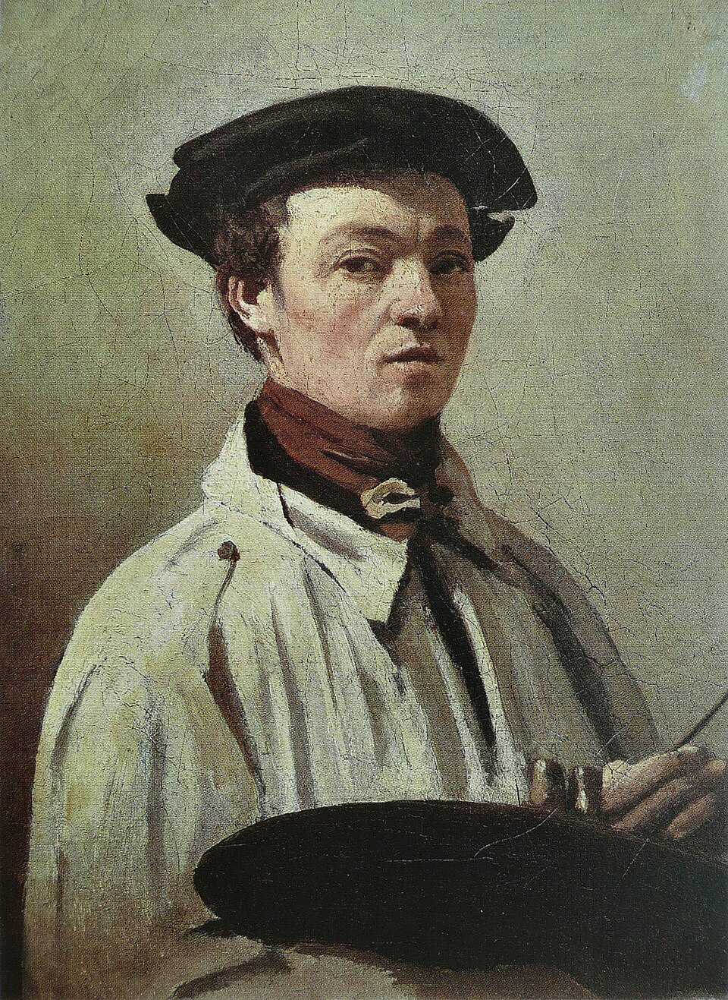

Pintor francés
Camille Corot
1796–1875
Puente entre el paisaje neoclásico y el impresionismo, pintaba del natural pequeños estudios que hoy se aprecian más que sus grandes composiciones de salón. Tuvo fama de generoso hasta lo temerario: mantuvo a la viuda de Millet y a Daumier ciego, y firmó cuadros de amigos necesitados para que pudieran venderlos, lo que ha convertido su catálogo en un problema de atribución permanente.